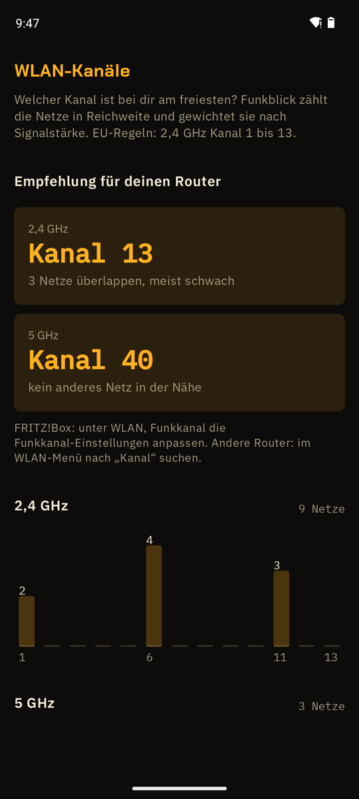

WLAN-Kanal ändern, aber welcher?
Funkblick zählt die Netze pro Kanal und empfiehlt den freiesten.
APK herunterladenQuellcode auf GitHub
Kostenlos, Android 8.0 oder neuer, läuft auf GrapheneOS ohne Google-Dienste. Kein Konto.

Funkblick ist eine WLAN-Analyse-App, ein WLAN-Analyzer ohne Werbung, und zeigt dir den besten WLAN-Kanal. Dafür zählt es die Netze um dich herum pro Kanal, gewichtet sie nach Signalstärke und empfiehlt den freiesten Kanal auf 2,4 und 5 GHz. Nach EU-Regeln, also mit Kanal 12 und 13.
So stellst du ihn ein
- In Funkblick den Scan starten und unter Mehr die WLAN-Kanäle öffnen. Am besten dort, wo das WLAN schwach ist.
- Die Empfehlung für 2,4 und 5 GHz merken.
- fritz.box im Browser öffnen, dann unter WLAN, Funkkanal die Funkkanal-Einstellungen anpassen.
- Kanal eintragen, übernehmen, nach ein paar Minuten in Funkblick prüfen.
Häufige Fragen
Bester WLAN-Kanal: woran erkennt man ihn?
An wenigen und schwachen Nachbarn auf demselben Kanal. Funkblick wertet beides aus und empfiehlt einen Kanal je Band.
Welcher 2,4-GHz-Kanal ist der beste?
Meist 1, 6 oder 11, weil sie sich nicht überlappen. In Europa ist auch 13 erlaubt und oft frei. Funkblick gewichtet die Nachbarn nach Signalstärke und wählt einen aus.
Was bedeutet DFS?
Die 5-GHz-Kanäle 52 bis 144 teilt sich das WLAN mit Wetter- und anderen Radaren. Der Router hört erst eine Minute hin und muss wechseln, wenn er Radar hört. Gerade deshalb sind sie oft frei.
Soll ich die automatische Kanalwahl ausschalten?
Nur wenn es hakt. Die FRITZ!Box wählt selbst, aber nur nach dem, was sie am Router hört. Funkblick misst dort, wo du sitzt.